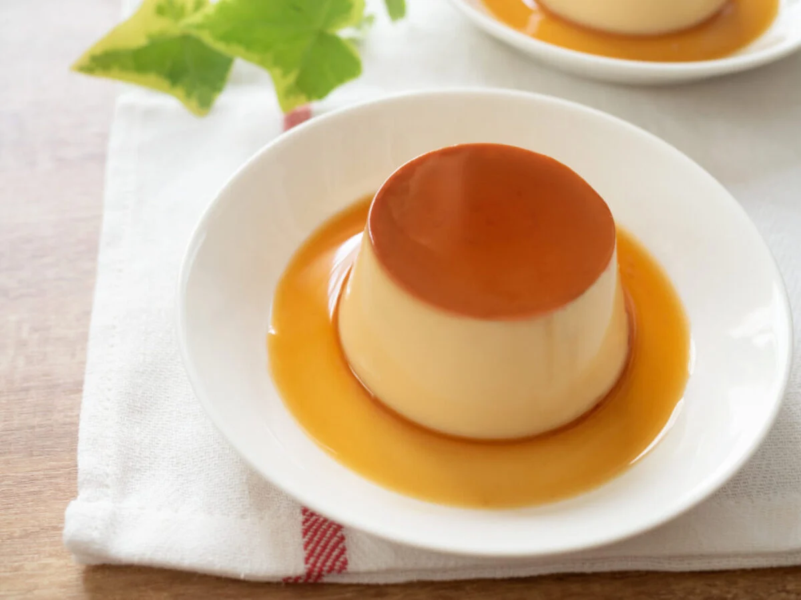

Leche Flan

Ingredients
- 10 pieces eggs
- 1 can condensed milk
- 2 1/2 teaspoon baking powder
- 1 cup fresh milk or evaporated milk
- 1 cup granulated sugar
- 1 teaspoon vanilla extract
- 1/4 cup fresh milk
- 1 piece salted duck egg sliced
- 1/2 cup grated cheese
- 3 pieces raw eggs
- 1/4 cup grated coconut
- Pre-cut banana leaf
Instructions
- Using all the eggs, separate the yolk from the egg white (only egg yolks will be used).
- Place the egg yolks in a big bowl then beat them using a fork or an egg beater
- Add the condensed milk and mix thoroughly
- Pour-in the fresh milk and Vanilla. Mix well
- Put the mold (llanera) on top of the stove and heat using low fire
- Put-in the granulated sugar on the mold and mix thoroughly until the solid sugar turns into liquid (caramel) having a light brown color. Note: Sometimes it is hard to find a Llanera (Traditional flan mold) depending on your location. I find it more convenient to use individual Round Pans in making leche flan.
- Spread the caramel (liquid sugar) evenly on the flat side of the mold
- Wait for 5 minutes then pour the egg yolk and milk mixture on the mold
- Cover the top of the mold using an Aluminum foil
- Steam the mold with egg and milk mixture for 30 to 35 minutes.
- After steaming, let the temperature cool down then refrigerate
- Serve for dessert. Share and Enjoy!